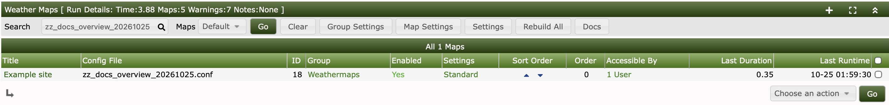
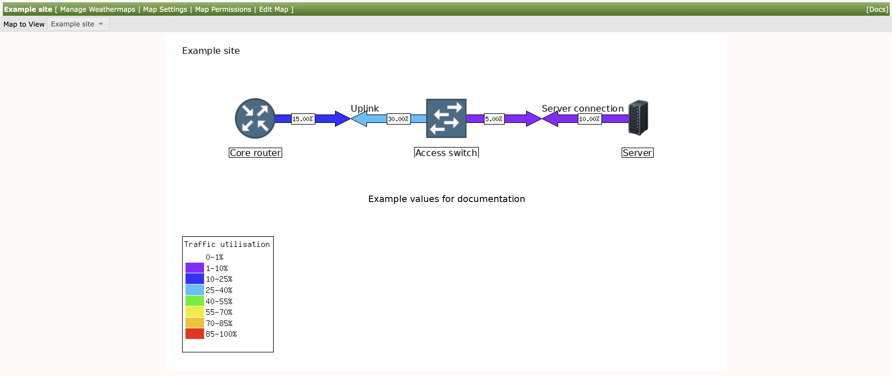

Viewing and managing maps
Cacti-wide preferences control the viewer and generation defaults. Map Properties, Map Style and Manage Colors customise individual maps.
The Docs button after Rebuild All on the management page opens this manual in a new tab, keeping the management page and its filters in place. Select a screenshot to open it at full size.

Create and register a map
Saving a configuration in configs/ does not add it to the managed map list.
Register it here so the poller can generate it and users can view it. Management also
controls whether a map is enabled, its group, order, settings and access permissions.

- In Manage Weathermaps, click the + at the far right of the green Weather Maps heading. This opens the configuration picker; it does not create or register a map yet.
- Under Create Options, enter a New Map filename such
as
examplesite.conf, including.conf, and an optional Map Title, such as Example site. The filename identifies the configuration on disk; the title is the name displayed on the map. - Choose Empty File as the Source Map for a blank map, or choose an existing source to start from a copy. Press Create.
- Find the new file in the configuration list below Create Options. If necessary, search for its filename. Click the + beside that row to register it. Creating the file and registering the map are separate steps.
- Back on the management page, review the map's enabled status, group and permissions. Click its title to open the editor. Add nodes and links, then use Return to Manage when finished. An enabled, registered map is included in normal poller runs; the file alone is not. The map title can be changed later in Map Properties.


Remove an unused configuration
To remove an unused file, find it in the same configuration list and choose its delete action, labelled Delete configuration file with the filename. Check the name in the confirmation before continuing. Registered files have no unused-file delete action; removing a registration does not itself erase the configuration.
Back up before deleting: editor Undo does not restore deleted configuration files. Avoid removing files directly while they still have active registrations.
Duplicate a map
- In Manage Weathermaps, select the map checkbox and choose Duplicate from the actions menu.
- Review the confirmation and the new title/filename formats.
<map_title>and<map_config>stand for the existing title and configuration name. - Continue, then review the new map before editing it. Duplication copies the configuration and registers the copy, retaining the source map's group, access grants, per-map settings and schedule. Generated output and warning/runtime counters start fresh.
A duplicate therefore inherits who can view the original. Review its permissions if the copy is intended for a different audience. Creating a configuration from an existing file in the editor is a separate workflow: register it with management before expecting normal poller generation and viewer access.
Organise map groups
Use the group administration page to add or rename groups and adjust their order. On the map list, use the map's group control to move it into another group. Map groups organise the viewer and can supply shared map settings; they are different from Cacti user groups used for access control.
Deleting a map group moves its maps into another existing group; it does not delete those maps. The final remaining group cannot be deleted. Review inherited settings after moving a map because its group overrides may change.
Users, groups and graph permissions
Cacti view/manage realms determine whether users can view Weathermap or administer it. Map-level user/group permissions determine which maps are accessible. An authenticated-user/Anyone grant is broad; use it deliberately. A map linking a graph does not grant permission to that graph. Missing preview images can therefore be an access problem even when the map is visible.
To grant or remove map access, open the map's Permissions page. Filter by users or Cacti user groups. The Has Permissions filter shows existing grants when checked; clear it to find entries without a grant. Select the relevant rows, choose Add or Remove, and apply the action. Verify the result with an account intended to view the map. A map-group name alone does not grant access.
The viewer offers authorised management shortcuts and a Docs link. Documentation is static help and is not an editor-access grant.
Viewing and cycling
Choose a map or group, use the thumbnail overview or full-image layout, and open individual maps for details. Responsive preview cards display generated thumbnails; changing their maximum generated resolution takes effect after rendering. If only one map is available, a full map can be shown directly.

Cycle mode rotates permitted maps. Its controls include previous/next, pause/resume and fullscreen/exit. The countdown reflects viewer cycling, not remaining device-poll time. Browser fullscreen and the viewer's fullscreen layout are related UI states, not configuration changes.
Hover on links to see previews, then move into the popup to click a graph. Each recognised Cacti preview opens its own full graph; clicking the map link still follows its configured click destination.
With a keyboard, Tab to a map hotspot and press Arrow Down to move into its preview. Tab between the available graph links. Escape from inside the popup closes it and returns focus to the map hotspot.
Cacti settings: Weathermap
Global Cacti preferences below control the viewer and rendering service. The management
page also offers Global, Group and per-map Map Settings: these are named
hint variables corresponding to SET entries.
For the same hint name, precedence is per-map management setting → group setting
→ global management setting → configuration-file SET. For example, a per-map
traffic_pulse override wins over its group's value. Removing an override lets
the next level apply. This is separate from normal configuration directives such as
BANDWIDTH and from Map Properties or Map Style in the editor. When a file's SET value
appears ineffective, check management overrides first.
| Setting | Purpose |
|---|---|
| Info URL Style | Click-through style when assigning graphs: Time Graph View (the current default) or Standard Graph View. Existing custom click URLs are not changed by selecting a different global default. |
| Page style / Show All Tab / Show Map Selector | Viewer layout, group navigation and individual map selection. |
| Thumbnail Maximum Size | Bounds generated thumbnails; takes effect on the next render. |
| Hover Graph Default Width/Height and Style | Dimensions and legend style for assigned hover previews. Existing custom URLs may retain their own parameters. |
| Refresh Time | Cycle-view timing. Automatic fits the available maps into five minutes; it does not change Cacti polling. |
| Output Format | PNG, JPEG or GIF, subject to GD support. PNG preserves crisp labels and transparency. |
| Map Rendering Interval | Every poller cycle, selected intervals or manual updates. Changing this affects freshness. |
| Map Processing Timeout | Time allowance for periodic generation. |
| Debug Mode / Quiet Logging | Generation diagnostics and routine log verbosity. |
| Show Weathermap Help Links | Optional footer help links. The map-heading Docs shortcut is directly available. |
Rendering, Boost and manual updates
Normally the Cacti poller generates active maps; no extra cron job is needed. The editor's design preview and poller output are separate. With Boost or delayed RRD writes, Weathermap can use its poller-output support; see data sources. Do not change global Cacti graph templates merely to sharpen Weathermap previews.
Administrators using manual rendering can run the bundled rebuild entry point from the plugin directory, under the usual poller account:
cd /path/to/cacti/plugins/weathermap
php weathermap-cacti-rebuild.phpUse actual paths and the same PHP/environment as Cacti. It loads Cacti via the relative installation path; do not edit a hard-coded Cacti root into the script. Avoid overlapping schedules. Check output ownership if web and poller operations use different accounts.